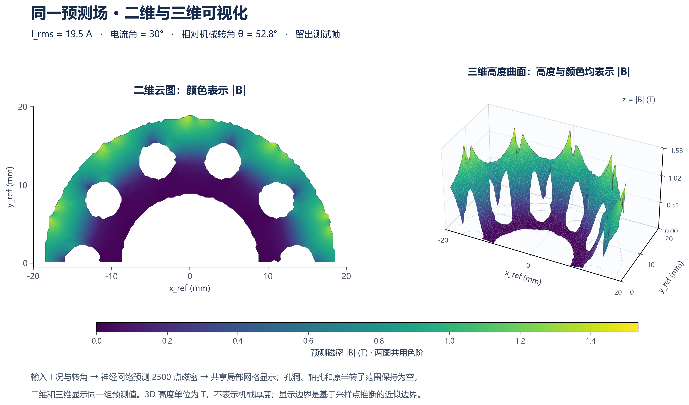

怎样使用
选择工况和位置
选择电流有效值与电流角，拖动转角滑块或输入1–300的帧序号。每帧间隔1.2°机械角。工况数据按需加载并缓存。
训练、验证、测试标签跟随当前帧。默认打开留出测试帧；“仅播放测试帧”可只检查未用于训练的位置。
切换2D与3D
2D用颜色表示磁密。3D用颜色和竖直高度表示同一磁密值，可拖动任意一图旋转，滚轮或按钮缩放，三图视角同步。
可切换局部三角面与原始采样点。CSV导出当前2500点，PNG导出当前视角的三幅对比图。
3D高度单位为T，不是电机轴向几何坐标。误差图有独立高度标尺；请读取数值，不能将它的视觉高度直接与磁密曲面比较。

数据范围与单位
- 12工况：16.7、19.5、24.5、27.3 A RMS × 电流角0°、30°、60°；固定1200 rpm。
- 每帧原有8500点，其中2500点属于转子铁芯。本网站保留原始半转子采样，不补全另一半或未采样实体。
- 磁密为
|B| = sqrt(Bx²+By²+Bz²)，单位T；平面坐标为mm。300帧已去掉360°闭合重复端点。 - 参考坐标固定于转子；世界坐标按
相对机械角 + 36°旋转。 - 网页磁密采用16位显示量化，单值最大舍入误差约1.17×10⁻⁵ T；精度指标由未量化数据计算。
曲面只在邻近采样点组成的4561个局部三角形内插值，保留可见孔洞。边界由点云推断，不能当作CAD精确边界。
网络与验证
模型使用64维POD空间基、条件MLP神经网络和6阶周期Fourier角度展开。输入电流、电流角、转子位置，输出2500点的磁密大小。
| 内部留出场景 | RMSE / T | 相对L₂ |
|---|---|---|
| 已知工况，留出转角 | 0.000152681 | 0.020310% |
| 完整留出19.5 A | 0.002050856 | 0.271885% |
| 完整留出30°电流角 | 0.008126870 | 1.083539% |
约30°重复周期内的等效相位放在同一集合，每周期15个训练、5个验证、5个测试相位，防止近重复帧跨集合。网站展示转角留出评估模型的结果。
已知工况角度拟合很好；整组新工况暂未优于简单工况插值。这是同批仿真的内部评估，不能承诺任意新工况、转速、空间点、几何或材料上的同等精度。
下载与复现
最终模型使用全部数据重拟合；它的训练误差不是本页面的测试成绩。NPZ推理只需Python和NumPy：
python research/rotor_model.py --model models/rotor_production.npz --current 22.5 --phase 30 --theta 45 --output prediction.csv原始数据包、训练方式、源码和模型说明见GitHub仓库README。